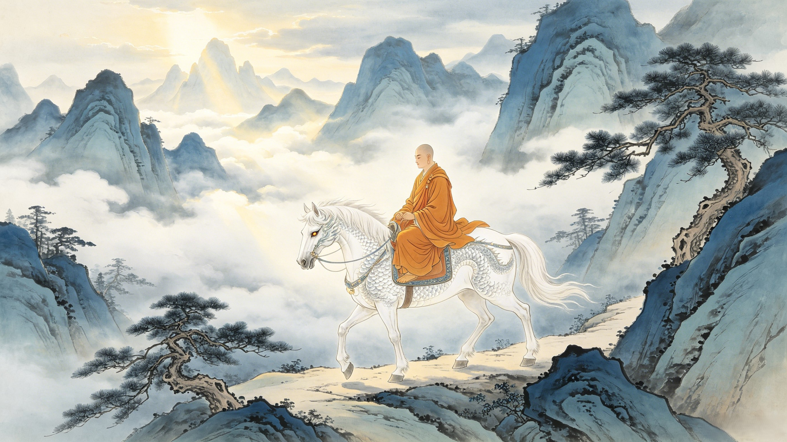

The Pilgrimage
Fourteen years. 108,000 li. Complete silence. While Sun Wukong fought demons and Zhu Bajie complained about hunger, Ao Lie — the White Dragon Horse — walked every step of the journey without a single word. His was the quietest pilgrimage. And perhaps the most profound.
The journey began with an act of consumption. Tang Sanzang's original horse — a mortal beast — could never have survived the demon-infested road ahead. So Ao Lie, in dragon form, ate it. When Sun Wukong attacked, Guanyin appeared to reveal the truth: this dragon was no threat. She transformed Ao Lie into a perfect white horse, identical to the one he had devoured. Tang Sanzang climbed onto his new mount's back, and the fifth pilgrim — the one no one counted — took his first step west.
The pilgrims crossed the Flaming Mountains, where the heat was so intense that mere proximity to the ground would blister a mortal's feet — but the White Dragon Horse carried Tang Sanzang through, his hooves never faltering. They passed through the Kingdom of Women, the Kingdom of Jisai, the Kingdom of Bhiksu. Demons attacked. Wukong fought. Bajie grumbled. Sha Wujing guarded the baggage. And through all of it, the horse walked. On narrow mountain paths where one misstep meant death. Across raging rivers. Through blizzards in the Great Snow Mountains. He never complained. He never resisted. He bore the full weight of the monk — the entire weight of heaven's mission — on his back.
At Precious Image Kingdom, Tang Sanzang was magically transformed into a tiger by the Yellow Robe Demon. The pilgrims were scattered. Wukong had been temporarily exiled. Bajie was useless. Sha Wujing had been captured. In this moment of absolute crisis, the White Dragon Horse did something he had never done before: he transformed back into human form. As Ao Lie — not a horse, but a dragon prince — he crept into the demon's palace, attempted an assassination, and engaged the Yellow Robe Demon in single combat. Though he was wounded and forced to retreat, his action saved Tang Sanzang's life and bought the time needed for Bajie to convince Wukong to return. Read the full account on the Dragon's Fury page.
Consider what Ao Lie gave up daily. As a dragon prince, he had commanded the waters of the Western Sea. He had swum through coral palaces. He could transform into any shape and fly through the clouds. As a horse, he ate grass. He stood in the rain. He was tied to trees at night. He was ridden — a creature of celestial rank reduced to a means of transportation. The psychological weight of this transformation must have been crushing. Yet he accepted it. Not once in the entire 14-year journey did Ao Lie attempt to break free, to reclaim his form, or to abandon the pilgrimage. His silence was not weakness. It was discipline.
When the pilgrims finally reached the Buddha's Thunderclap Monastery on Spirit Mountain, the White Dragon Horse had walked 108,000 li — farther than any of the others. Wukong could somersault. Bajie and Sha Wujing had their demon strength. Tang Sanzang rode. But Ao Lie walked every step of it. At the journey's end, the Buddha himself acknowledged the dragon's service. He was elevated to the rank of Naga Prince, one of the eight classes of celestial dragons — a rank higher than the Dragon Kings themselves. The horse became a dragon again. But he was no longer the same dragon who had burned a pearl in his father's palace.
The White Dragon Horse's relationship with each pilgrim was distinct:
Tang Sanzang — The monk he carried. Their bond was physical in the most literal sense: Tang Sanzang's body rested on Ao Lie's back for fourteen years. More than any other pilgrim, Ao Lie was physically indispensable to the journey's success. Without him, the mortal monk could never have survived the terrain.
Sun Wukong — The first to fight him, the first to respect him. Wukong initially attacked the "demon" who ate their horse, but after learning the truth from Guanyin, he became Ao Lie's fiercest defender. Wukong — who chafed at every authority — understood the dragon's silent sacrifice in a way the others didn't.
Zhu Bajie — The former Marshal Canopy, sentenced to banishment for lusting after the Moon Goddess. Bajie was Ao Lie's closest parallel: both were celestial aristocrats brought low. But where Bajie complained constantly, Ao Lie endured silently. Their contrast is deliberate — two fallen nobles, two different responses to suffering.
Sha Wujing — The Sand Monk, another celestial officer who had fallen from grace. Sha Wujing and Ao Lie shared something none of the others did: quiet dignity in service. Neither complained. Neither sought glory. They simply did their duty, day after day, for fourteen years.
In a world that celebrates loudness — the loudest warrior, the boldest speaker, the most visible hero — the White Dragon Horse represents an alternative model of greatness. His contribution was not flashy. It was not celebrated in poetry the way Wukong's battles were. But it was irreplaceable. Without his silent, steady carrying of the monk, there would have been no journey. No scriptures. No redemption for any of them.
The White Dragon Horse reminds us that the most important work is often the quietest. The person who shows up every day. The one who carries the weight without complaint. The one nobody notices until they are gone. In the grand Buddhist cosmology of Journey to the West, where enlightenment is the ultimate goal, Ao Lie's path is perhaps the most instructive: salvation through service. Not through battle. Not through prayer. Through the simple, daily, unglamorous act of carrying someone else's burden.
The journey lasted 14 years and covered 108,000 li (approximately 54,000 kilometers or 33,500 miles). The White Dragon Horse walked every step of it, carrying Tang Sanzang on his back the entire way. No other pilgrim physically bore the weight of another.
His silence was part of his penance. As a dragon condemned to death, his commutation came with conditions: to serve in humble form, without the privileges of his former rank. Speaking — asserting identity — would have been a rejection of his sentence. His silence was also symbolic: true service doesn't need words to be meaningful.
Only once. In chapter 30 of Journey to the West, when Tang Sanzang was turned into a tiger by the Yellow Robe Demon, Ao Lie transformed back into human form and fought the demon alone. He was wounded and forced to retreat, but his bold action saved Tang Sanzang and convinced Zhu Bajie to recall Sun Wukong from exile.
They shared the most intimate physical bond of the pilgrimage: the monk's body rested on the horse's back for fourteen years. Ao Lie was literally the foundation upon which the journey was built. Without him, the mortal Tang Sanzang — who possessed no supernatural powers — could never have survived the terrain or the demons.
Yes. Although often overlooked, Journey to the West explicitly names five beings who reached Thunderclap Monastery: Tang Sanzang, Sun Wukong, Zhu Bajie, Sha Wujing, and the White Dragon Horse. At the journey's end, the Buddha elevated him to Naga Prince — formal recognition of his status as the fifth pilgrim.
Dive Deeper